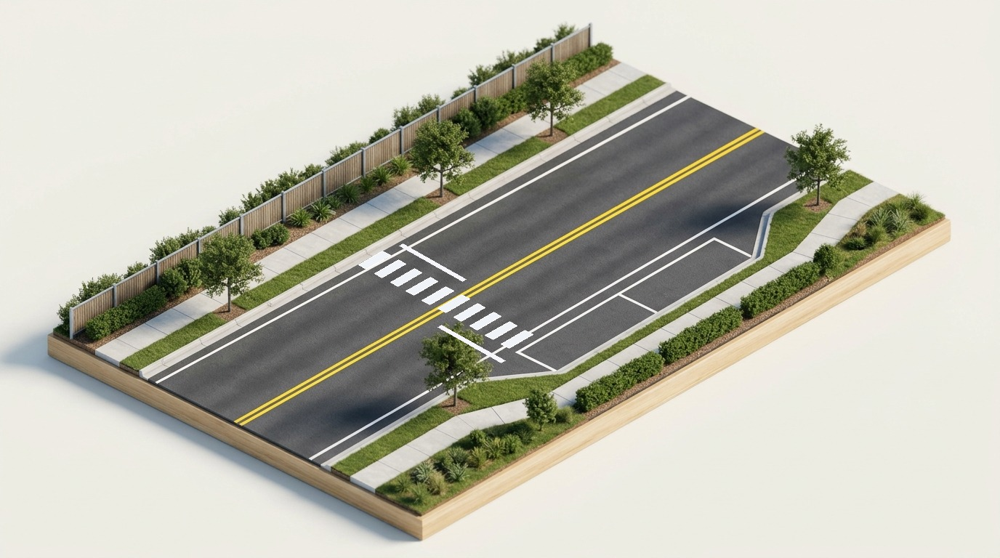

Right-of-Way is Given, Not Taken
Under Texas Transportation Code § 545.151, the law does not grant absolute ownership of intersections; it imposes a statutory duty to yield. The universal legal duty of due care under § 545.401 establishes that preservation of human life always supersedes mechanical legal priority.



Assert vs. Prevent Decision Engine
Texas Right-of-Way Sanction Strata
3-Stage Defensive Conflict Cycle
Verify intersection conflict zone is physically clear before accelerating on green; scan left, center, right.
Spot cross-traffic drivers with excessive approach speed who appear unable or unwilling to stop for red lights.
Hold position behind stop bar until the errant driver clears; never stake life on mechanical priority.
Knowledge Check: Jurisprudence Basis
Why are right-of-way rules codified as legal duties rather than enforceable property rights in Texas?
"The law provides rules; prudence provides survival." Never stake your physical safety on the expectation that another driver will obey legal traffic commands. Concede the space, decelerate safely, and preserve human life.